Ax
Axis — 가공의 축
X · Y · Z · 회전축. 정밀가공의 기본 단위이자, 회사 이름의 첫 글자입니다.
AXIA DYNAMICS / PRECISION MACHINING × AI
Every Axis, One Intelligence.
악시아 다이내믹스는 정밀가공 공장을 위한 AI 운영 시스템 AXIA MX™ 를 만듭니다. 장비 · 사람 · 도면 · NC 를 하나로 잇고, AI 는 제안하고 결정은 공장 사람이 합니다.
1s
장비 상태 수집 주기
CNC 컨트롤러 직결
0
바깥으로 여는 포트
공장 안 설치 기준
On‑prem
데이터는 공장 안에
고객 서버 · 매일 자동 백업
Human-in-the-loop
AI 는 제안 · 사람이 결정
판정마다 근거 표시
01 COMPANY
정밀가공 공장의 모든 축 — 장비 · 사람 · 도면 · NC — 을 하나로 잇고, 확인된 데이터와 AI 로 더 정확한 결정을 돕습니다. 악시아 다이내믹스는 머시닝센터(MCT) 현장에서 출발한 정밀가공 AI 회사입니다.
Ax
X · Y · Z · 회전축. 정밀가공의 기본 단위이자, 회사 이름의 첫 글자입니다.
AI
기계가 남긴 데이터 위에서 일하는 지능. 정밀가공 공장의 AX(AI 전환)를 이끕니다.
ἀξία
그리스어로 '가치'. 공장에 실제로 남는 시간 · 품질 · 신뢰를 만듭니다.
01
없는 값을 지어내지 않습니다. 모르면 '판정 불가'라고 보여 줍니다.
02
확인된 것만 '됐다'고 말합니다. 현장에서 운영으로 확인한 뒤가 완료입니다.
03
기계 앞 사람이 쓰는 화면이 먼저입니다. 작업자 · 사장님 모바일까지.
04
공장 데이터는 공장 안에 둡니다. 클라우드 가입을 강요하지 않습니다.
02 PRODUCT

™AI Machining eXecution
정밀가공 공장 AI 운영 시스템
견적부터 출하까지, 정밀가공 공장의 하루를 한 흐름으로 잇습니다. 장비가 직접 기록을 남기고, NC 프로그램과 도면을 미리 검증하고, 원청 감사에는 기록으로 답합니다.
01 · MACHINE LINK
CNC 컨트롤러에 직접 연결해 장비 상태 · 사이클 · 알람 · 프로그램을 1초 단위로 받고, NC 프로그램을 장비로 보내고 되받습니다. 사람이 적지 않아도 가공 기록이 남습니다.
02 · VERIFY
NC 프로그램 검토 · 3D 모델(STEP)과 도면 치수 대조 · 구멍 검증 · 3D 가공 시뮬레이션. 판정마다 어느 줄 · 어느 치수인지 근거를 함께 보여 주고, 사람이 수용합니다.
03 · DATA OWNERSHIP
고객 공장 서버에 설치하고, 바깥으로 여는 포트는 0 입니다. 매일 자동 백업. 공장 데이터를 클라우드로 내보내라고 요구하지 않습니다.
EDGE
장비 수집 · NC 전송. 머시닝센터 옆에서 상태 · 사이클 · 알람을 받아 서버로 보냅니다.
DATUM
NC 검토 · 치수 대조 · 구멍 검증. 가공 전에 틀린 곳을 찾습니다.
FLOOR
작업자 · 사장님 모바일. 기계 앞에서 패드 · 폰으로 바로 씁니다.
ASK
공장 데이터를 말로 묻는 자연어 조회. 공장 서버 안의 자체 AI 모델로 돕니다.
이번 달 납기 지난 수주 보여 줘
PORTAL
거래처 포털. 공급사 · 외주처가 견적 요청을 받아 바로 답합니다.
03 AI PRINCIPLES
NC 검토 · 치수 대조 · 일정 제안은 사람이 승인하고 수용합니다.
판정마다 어느 줄 · 어느 치수 · 어느 규칙인지 함께 냅니다.
'판정 불가'를 감추지 않습니다.
자연어 조회 · 검토 엔진은 고객 서버에서 돕니다.
현장에서 확인된 기능만 소개합니다.
04 CONTACT
머시닝센터(MCT)로 가공하는 10~300인 정밀가공 공장, 원청 품질 요구를 받는 협력사라면 이야기를 나눠 보세요.